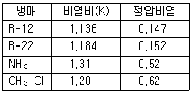
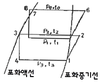
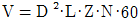
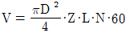
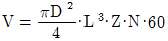
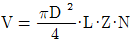
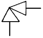

공조냉동기계기능사 (2007-04-01 기출문제)
1과목: 공조냉동안전관리
1. 안전사고의 발생 중 가장 큰 원인이라 할 수 있는 것은?
- 설비의 미비
- 정돈상태의 불량
- 계측공구의 미비
- 작업자의 실수
(정답률: 88%)

2. 전기용접 작업시 주의사항 중 맞지 않는 것은?
- 눈 및 피부를 노출시키지 말 것
- 우천시 옥외 작업을 가능한 하지 말 것
- 용접이 끝나고 슬랙 작업시 보안경과 장갑은 벗고 작업할 것
- 홀더가 가열되면 자연적으로 열이 제거될 수 있도록 할 것
(정답률: 91%)
3. 냉동장치에서 안전상 운전 중에 점검해야 할 중요사항에 해당되지 않는 것은?
- 흡입압력과 온도
- 유압과 유온
- 냉각수량과 수온
- 전동기의 회전방향
(정답률: 81%)
4. 독성가스의 제독작업에 필요한 보호구가 아닌 것은?
- 안전화 및 귀마개
- 공기호흡기 또는 송기식 마스크
- 보호장화 및 보호장갑
- 보호복 및 격리식 방독마스크
(정답률: 77%)
5. 보일러 취급부주의로 작업자가 화상을 입었을 때 응급처치 방법으로 틀린 것은?
- 화상부를 냉수에 담구어 화기를 빼도록 한다.
- 물집이 생겼으면 터뜨리지 말고 그냥 둔다.
- 기계유나 변압기유를 바르도록 한다.
- 상처부위를 깨끗이 소독한 다음 외용 항생제를 사용하고 상처를 보호한다.
(정답률: 89%)
6. 보일러 운전 중 미연소가스로 인한 폭발에 관한 안전사항으로 옳은 것은?
- 방폭문을 부착한다.
- 연도를 가열한다.
- 스케일을 제거 한다.
- 배관을 굵게 한다.
(정답률: 82%)
7. 보호구 선정시 유의 사항에 해당되지 않는 것은?
- 사용목적에 적합할 것
- 작업에 방해되지 않을 것
- 규정에 합격하고 보호성능이 보장될 것
- 외형이 화려할 것
(정답률: 86%)
8. 다음 중 공구별 주된 역할을 바르게 나타낸 것은?
- 펀치 : 목재나 금속을 자르거나 다듬는다.
- 니퍼 : 금속편을 물려서 잡고 구부리고 당긴다.
- 스패너 : 볼트나 너트를 조이고 푸는데 사용한다.
- 소켓렌치 : 금속이나 가스켓류 등에 구멍을 뚫는다.
(정답률: 82%)
9. 냉동기 검사에 합격한 냉동기에는 다음 사항을 명확히 각인한 금속박판을 부착하여야 한다. 각인 될 내용에 해당되지 않는 것은?
- 냉매가스의 종류
- 냉동능력(RT)
- 냉동기 제조자의 명칭 또는 약호
- 냉동기 운전조건(주위온도)
(정답률: 68%)
10. 보일러 취급시 주의사항이다. 옳지 않은 것은?
- 보일러의 수면계 수위는 중간위치를 기준 수위로 한다.
- 점화전에 미연소가스를 방출 시킨다.
- 연료계통의 누설 여부를 수시로 확인한다.
- 보일러 저부의 침전물 배출은 부하가 가장 클 때 하는 것이 좋다.
(정답률: 82%)
11. 전동공구 작업시 감전의 위험성 때문에 해야 하는 것은?
- 단전
- 감지
- 단락
- 접지
(정답률: 79%)
12. 연소에 미치는 영향으로 잘못 설명된 것은?
- 온도가 높을수록 연소속도가 빨라진다.
- 입자가 작을수록 연소속도가 빨라진다.
- 촉매가 작용하면 연소속도가 빨라진다.
- 산화되기 어려운 물질일수록 연소속도가 빨라진다.
(정답률: 81%)
13. 재해의 원인 중 불안전한 상태에 해당 되는 것은?
- 보호구 미착용
- 유해한 작업환경
- 안전조치의 불이행
- 운전의 실패
(정답률: 39%)
14. 사고의 본질적인 특성에 대한 설명으로 올바르지 못한 것은?
- 사고의 시간성
- 사고의 우연성
- 사고의 정기성
- 사고의 재현 불가능성
(정답률: 41%)
15. 다음 대책 중 기술적인 대책이 아닌 것은?
- 안전설계
- 근로의욕의 향상
- 작업행정의 개선
- 점검보전의 확립
(정답률: 83%)
2과목: 냉동기계
16. 왕복동 압축기의 기계효율(ηm)에 대한 설명으로 옳은 것은?
- 지시동력 / 축동력
- 이론적동력 / 지시동력
- 지시동력 / 이론적동력
- (축동력×지시동력) / 이론적동력
(정답률: 61%)
17. 35℃의 물 3m3을 5℃로 냉각하는데 제거할 열량은?
- 60,000kcal
- 80,000kcal
- 90,000kcal
- 120,000kcal
(정답률: 55%)
18. 냉동이란 저온을 생성하는 수단 방법이다. 다음 중 저온생성 방법에 들지 못하는 것은?
- 기한제 이용
- 액체의 증발열 이용
- 펠티에 효과(peltier effect) 이용
- 기체의 응축열 이용
(정답률: 39%)
19. 다음 중 표준대기압(1atm)에 해당 되지 않는 것은?
- 76㎝Hg
- 1.013bar
- 15.2lb/in2
- 1.0332kgf/cm2
(정답률: 49%)
20. 2원 냉동장치에는 고온측과 저온측에 서로 다른 냉매를 사용한다. 다음 중 저온측에 사용하기에 적합한 냉매군은 어느 것인가?
- R-12, R-22, R-500
- R-13, 에탄, 에틸렌
- R-13, R-21, R-113
- 암모니아, 프로판, R-11
(정답률: 42%)
21. 압축후의 온도가 너무 높으면 실린더헤드를 냉각할 필요가 있다. 다음 표를 참고하여 압축 후 냉매의 온도가 가장 높은 냉매는? (단, 모든 냉매는 같은 조건으로 압축함)

- R-12
- R-22
- NH3
- CH3Cl
(정답률: 62%)
22. 냉동기용 윤활유로서 필요조건에 해당되지 않는 것은?
- 냉매와 친화반응을 일으키지 않을 것
- 열 안정성이 좋을 것
- 응고점이 낮을 것
- 유막 강도가 작을 것
(정답률: 59%)
23. 다음의 그림은 무슨 냉동사이클 이라고 하는가?

- 2단 압축 1단 팽창 냉동사이클 이라 한다.
- 2단 압축 2단 팽창 냉동사이클 이라 한다.
- 2원 냉동사이클 이라 한다.
- 강제 순환식 2단 사이클 이라 한다.
(정답률: 63%)
24. 습포화증기에 관한 사항 중 올바른 것은?
- 가열하면 과열증기, 포화증기 순으로 된다.
- 냉각을 하면 건조포화증기가 된다.
- 습포화증기 중에서 액체가 차지하는 질량비를 습도라 한다.
- 대기압하에서 습포화증기의 온도는 98℃정도이다.
(정답률: 50%)
25. 왕복 압축기에서 실린더 수Z, 지름D, 실린더 행정L, 매분 회전수N 일 때 이론적 피스톤 압출량의 산출식으로 옳은 것은? (단, 압출량의 단위는 m3/h이다.)




(정답률: 53%)
26. 다음 중 입형 쉘앤 튜브식 응축기의 특징이 아닌 것은?
- 옥외설치가능
- 액냉매의 과냉각도가 쉬움
- 과부하에 잘 견딤
- 운전 중 청소가능
(정답률: 44%)
27. 정압식 팽창밸브의 설명 중 틀린 것은?
- 부하변동에 따라 자동적으로 냉매 유량을 조절한다.
- 증발기내의 압력을 일정하게 유지시켜 주는 냉매 유량 조절밸브이다.
- 단일 냉동 장치에서 냉동부하의 변동이 적을 때 사용한다.
- 냉수브라인 등의 동결을 방지할 때 사용한다.
(정답률: 30%)
28. 터보냉동기의 용량제어와 관계없는 것은?
- 회전수 가감법
- 흡입 가이드 베인 조절법
- 클리어런스 증대법
- 냉각수량 조절법
(정답률: 43%)
29. 다음 중 옳은 것은?
- 냉각탑의 입구수온은 출구수온보다 낮다.
- 응축기 냉각수 출구온도는 입구온도보다 낮다.
- 응축기에서의 방출열량은 증발기에서 흡수하는 열량과 같다.
- 증발기의 흡수열량은 응축열량에서 압축열량을 뺀 값과 같다.
(정답률: 34%)
30. 다음 보온재중 사용온도가 가장 낮은 것은?
- 스티로폼
- 암면
- 글라스울
- 규조토
(정답률: 57%)
31. 다음 중 나사 패킹으로 냉매배관에 주로 많이 쓰이는 것은?
- 고무
- 몰드
- 일산화연
- 합성수지
(정답률: 35%)
32. 25A 배관용 탄소강 강관의 관용 나사산수는 길이 25.4㎜에 대하여 몇 산이 표준인가?
- 19산
- 14산
- 11산
- 8산
(정답률: 53%)
33. 주로 저압증기나 온수배관에서 호칭지름이 작은 분기관에 이용되며, 굴곡부에서 압력강하가 생기는 이음쇠는?
- 슬리브형
- 스위블형
- 루프형
- 벨로즈형
(정답률: 43%)
34. 다음의 기호가 표시하는 밸브는?

- 볼 밸브
- 글로우 밸브
- 수동 밸브
- 앵글 밸브
(정답률: 75%)
35. 전류계의 측정범위를 넓히는데 사용되는 것은?
- 배율기
- 분류기
- 역률기
- 용량분압기
(정답률: 56%)
36. 전자밸브는 다음 어느 동작에 해당되는가?
- 비례동작
- 적분동작
- 미분동작
- 2위치동작
(정답률: 53%)
37. 마취성이 있고, -100℃정도의 식품, 초저온 동결에 사용되는 것은?
- 에틸 알콜
- 염화칼슘
- 에틸렌글리콜
- 염화나트륨
(정답률: 47%)
38. 다음 중 이상적인 냉동사이클로 맞는 것은?
- 오토 사이클
- 카르노 사이클
- 사바테 사이클
- 역카르노 사이클
(정답률: 65%)
39. 증발온도가 낮을 때 미치는 영향 중 틀린 것은?
- 냉동능력 감소
- 소요동력 감소
- 압축비 증대로 인한 실린더 과열
- 성적계수 저하
(정답률: 48%)
40. 다음 중 전자밸브를 작동시키는 주 원리는?
- 냉매의 압력
- 영구자석 철심의 힘
- 전류에 의한 자기작용
- 전자밸브내의 소형 전동기
(정답률: 72%)
41. 프레온 냉동장치에서 열교환기 설치목적으로서 적합하지 않는 것은?
- 냉매액을 과냉각 시켜 플래쉬 가스 발생 방지
- 만액식 증발기의 유회수 장치에서는 오일과 냉매를 분리
- 흡입가스르 약간 과열시킴으로서 리키드백 방지
- 팽창밸브 통과시 발생되는 플래쉬 가스량을 증가시켜 냉동효과를 증대
(정답률: 49%)
42. CA냉장고란 무엇의 총칭인가?
- 제빙용 냉장고의 총칭이다.
- 공조용 냉장고의 총칭이다.
- 해산물 냉장고의 총칭이다.
- 청과물 냉장고의 총칭이다.
(정답률: 73%)
43. 냉동기의 냉동능력이 24,000kcal/h, 압축일 5kcal/kg, 응축열량이 35kcal/kg일 경우 냉매순환량은?
- 600kg/h
- 800kg/h
- 700kg/h
- 4,000kg/h
(정답률: 49%)
44. 저온을 얻기 위해 2단 압축을 했을 때의 장점은?
- 성적계수가 향상 된다.
- 설비비가 적게 된다.
- 체적효율이 저하 한다.
- 증발압력이 높아진다.
(정답률: 67%)
45. 흡수식 냉동기의 성적계수를 구하는 식은?
- 냉동능력 / 흡수기에서의 방열량
- 용액 열교환기의 열교환량 / 냉동능력
- 냉동능력 / 재생기에서의 방열량
- 응축기에서의 방열량 / 냉동능력
(정답률: 32%)
3과목: 공기조화
46. 송풍기의 축동력 산출시 필요한 값이 아닌 것은?
- 송풍량
- 덕트의 단면적
- 전압효율
- 전압
(정답률: 48%)
47. 불쾌지수를 구하는 공식으로 옳은 것은? (단, t : 건구온도, t' : 습구온도)
- 0.72(t ＋ t') ＋ 40.6
- 0.85(t ＋ t') ＋ 40.6
- 0.72(t - t') ＋ 50.6
- 0.85(t - t') ＋ 50.6
(정답률: 34%)
48. 간접난방(온풍난방)에 관한 설명으로 옳지 않은 것은?
- 연소장치, 송풍장치 등이 일체로 되어 있어 설치가 간단하다.
- 예열부하가 거의 없으므로 기동시간이 아주 짧다.
- 방열기나 배관 등의 시설이 필요 없으므로 설비비가 싸다.
- 실내 층고가 높을 경우에도 상하의 온도차가 적다.
(정답률: 51%)
49. 단일덕트 정풍량방식의 특징이 아닌 것은?
- 실내부하가 감소될 경우에 송풍량을 줄여도 실내공기가 오염되지 않는다.
- 고성능 필터의 사용이 가능하다.
- 기계실에 기기류가 집중 설치되므로 운전보수관리가 용이하다.
- 각 실이나 존의 부하변동이 서로 다른 건물에서는 온습도에 불균형이 생기기 쉽다.
(정답률: 52%)
50. 난방공조에서 실내온도(코일의 입구온도)가 23℃, 현열량4000kcal/h, 풍량이 2400kg/h이면 코일의 출구온도는?
- 26.95℃
- 29.94℃
- 33.42℃
- 36.52℃
(정답률: 39%)
51. 다음 가습기 중 부하에 대한 응답이 빠르고 가습효율이 100%에 가까우며 대용량의 중앙식 공조방식에 적합한 가습기는?
- 물분무식 가습기
- 증발팬 가습기
- 증기 가습기
- 소형 초음파 가습기
(정답률: 65%)
52. 고온수 난방의 특징으로 적당하지 않은 것은?
- 고온수 난방은 증기난방에 비하여 연료절약이 된다.
- 고온수 난방방식의 설계는 일반적인 온수난방방식보다 쉽다.
- 공급과 환수의 온도차를 크게 할 수 있으므로 열수송량이 크다.
- 장거리 열수송에 고온수 일수록 배관경이 작아진다.
(정답률: 47%)
53. 증기보일러 및 온수온도가 120℃를 넘는 온수보일러에서 최대 연속증발량 보다 많은 취출량을 갖는 경우에 설치해야 할 부속기기는?
- 안전밸브
- 체크밸브
- 릴리프관
- 압력계
(정답률: 28%)
54. 수량 2000ℓ/min, 양정 50m, 펌프효율 65%인 펌프의 소요 축동력은 몇 kW인가?
- 2kW
- 14kW
- 25kW
- 36kW
(정답률: 35%)
55. 습공기 절대습도와 그와 동일온도의 포화습공기 절대습도와의 비로 나타내며 단위는 %로 나타내는 것은?
- 절대습도
- 상대습도
- 비교습도
- 관계습도
(정답률: 30%)
56. 다음 중 냉방부하 계산시 현열부하에만 속하는 것은?
- 인체 발생열
- 기구 발생열
- 송풍기 발생열
- 틈새바람에 의한 열
(정답률: 40%)
57. 자연환기에 관한 설명 중 틀린 것은?
- 자연환기는 실내외의 온도차에 의한 부력과 외기의 풍압에 의한 실내외의 압력차에 의해 이루어진다.
- 자연환기에 의한 방의 환기량은 그 방의 바닥부근과 천장 부근의 공기 온도차에 의해 결정되는데, 급기구 및 배기구의 위치에는 무관하다.
- 자연환기는 자연력을 이용하므로 동력은 필요하지 않지만 항상 일정한 환기량을 얻을 수 없다.
- 자연환기로 공장 등에서 다량의 환기량을 얻고자 할 경우는 벤틸레이터를 지붕면에 설치한다.
(정답률: 67%)
58. 공조부하계산에 있어서 백열등의 1KW당 발생열량은 얼마인가?
- 641kcal/h
- 680kcal/h
- 860kcal/h
- 1000kcal/h
(정답률: 49%)
59. 다음 취출에 관한 용어 설명 중 틀린 것은?
- 1차 공기 : 취출부로부터 취출된 공기
- 2차 공기 : 1차공기로부터 유도되어 운동하는 실내의 공기
- 내부유인 : 취출구의 내부에 실내공기를 흡입해서 이것과 취출 1차 공기를 혼합해서 취출하는 작용
- 유인비 : 닥트단면의 장변을 단변으로 나눈 값
(정답률: 44%)
60. 개별공조방식의 특징 설명으로 틀린 것은?
- 설치 및 철거가 간편하다.
- 개별제어가 어렵다.
- 히트 펌프식은 냉난방을 겸할 수 있다.
- 실내 유닛이 분리되어 있지 않는 경우는 소음과 진동이 있다.
(정답률: 66%)